Overview - top
WooGeo Marker plugin is used to point out the products & vendor availability in particular geolocation , according the user distance provided the product available in particular location will be listed in goggle map. Plugin contains the following Features, as listed below,
- Products and vendors available within the user's geolocation can be searched and viewed.
- Admin can handle both admin setting options for product listing and vendor listing separately in wp-admin.
- Admin can create custom markers separately for each product categories in admin, So that while user's searching for products can view the particular product with its icon in goggle map, replacing default goggle map marker. which will help user easily to recognize the product category.
- User's can view the address , product link url in info-view option in goggle map.
- Product category filter widget is available , which can be enabled/disabled in admin. Admin can flip the goggle map using admin settings option to appear it in main header area or sidebar area along with widget filter options in wordpress.
Apart from the features. Use the admin option effectively,and also provide product & vendor location info properly to get better results.
2 Installation - top
2.1 Install Plugin - top
How to install through FTP #1
- Initially install Wordpress as per online documentation.
- Download the Woogeo Marker plugin.
- Then locate folder path /wp-content/plugins.
- Place the downloaded plugin in that folder and extract it.
After that you can view the plugin added in the list in admin area,
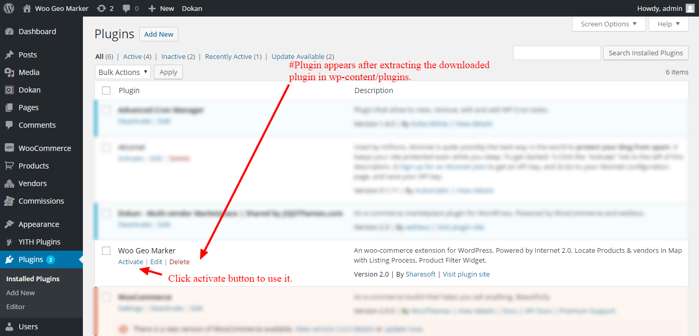
How to Install through Admin #2
Login into Your site Wordpress wp-admin.
Click Plugins menu in admin sidebar, Select Add new button,
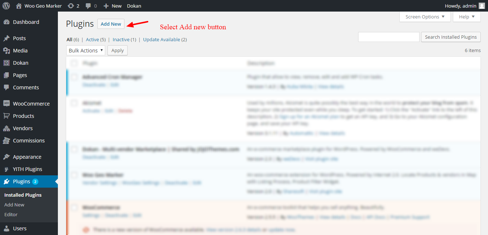
On plugin listing page select upload plugin button at the top of the plugin list page,
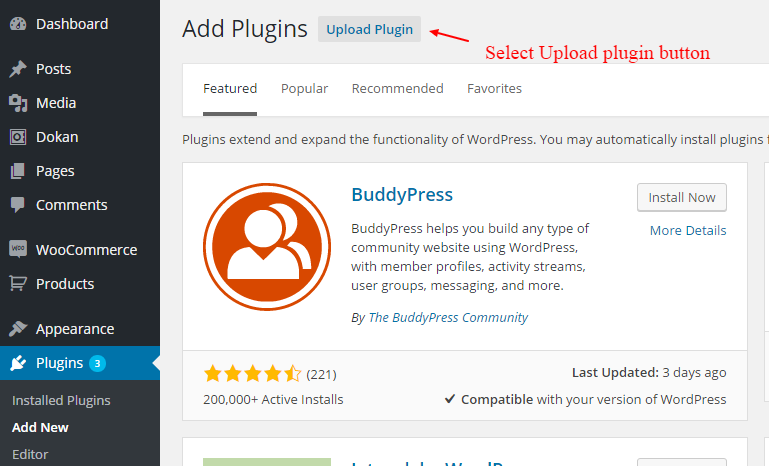
On clicking it opens plugin upload tab where you can add our downloaded plugin zip file,
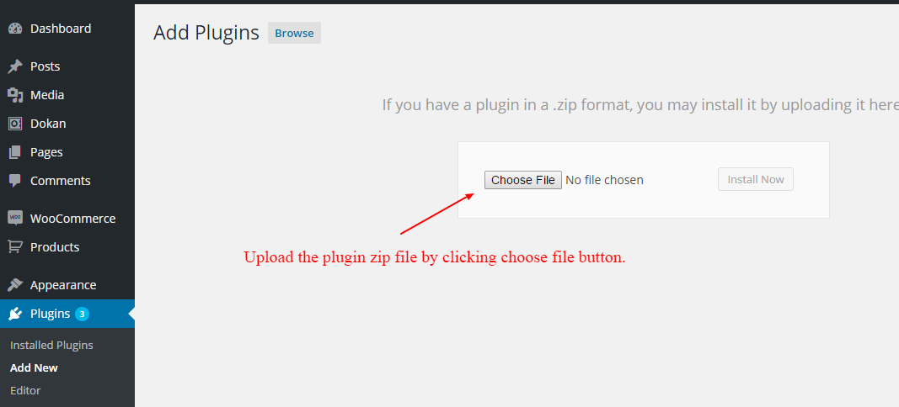
2.2 Install dependency plugins - top
After activating plugin, Plugin Admin settings option will appear,
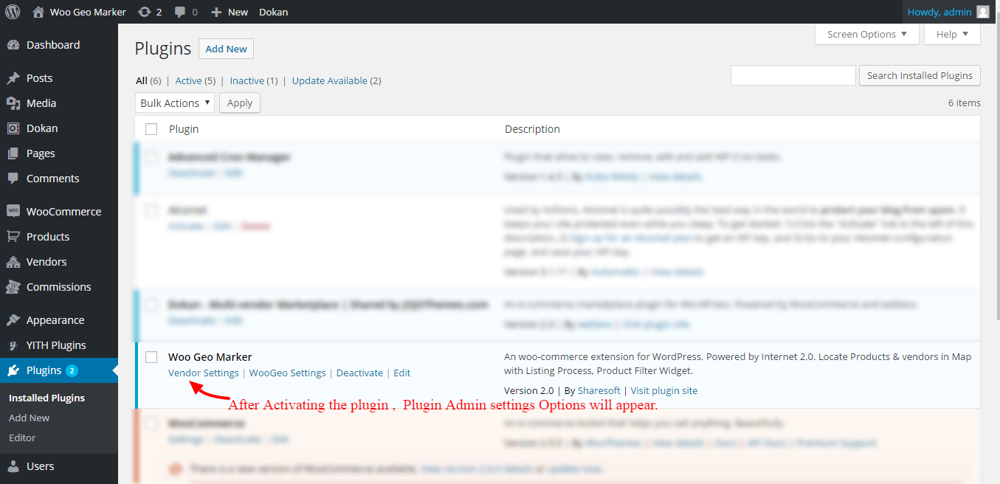
To get all the features you see on our demo, make sure you install all the plugins with version compatible, listed below ,
- Wordpress Tested upto (version.4.6.1).
- Dokan - Multi-vendor Marketplace (Version 2.3), now tested upto version(2.3).
- WooCommerce (Version 2.5.5), now tested upto version(2.6.8).
- YITH WooCommerce Multi Vendor (Version 1.9.11), now tested upto version(1.9.16).
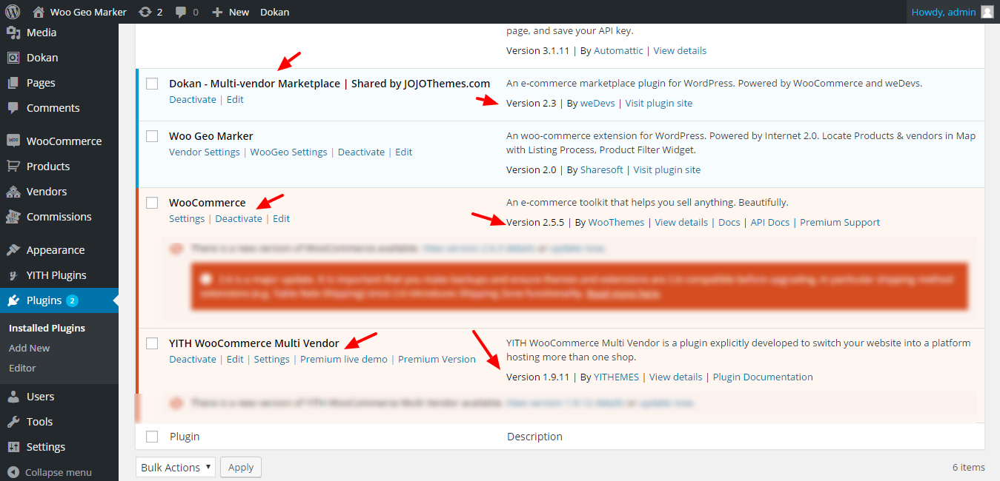
2.3 How the plugin functions - top
- After activating the plugin. Every product added through woocommerce must be updated with city, so the products with city location available listed.
- Our plugin collects the products & vendor locations, Marks them in Goggle maps with details of it. With range & current user location shared (or) detected in the browser the products & vendor available are displayed according to their geolocation.
- So the users can filter & search the products within distance range available.
Image below, explains how the product located with filter option are plotted in goggle map and listed out.
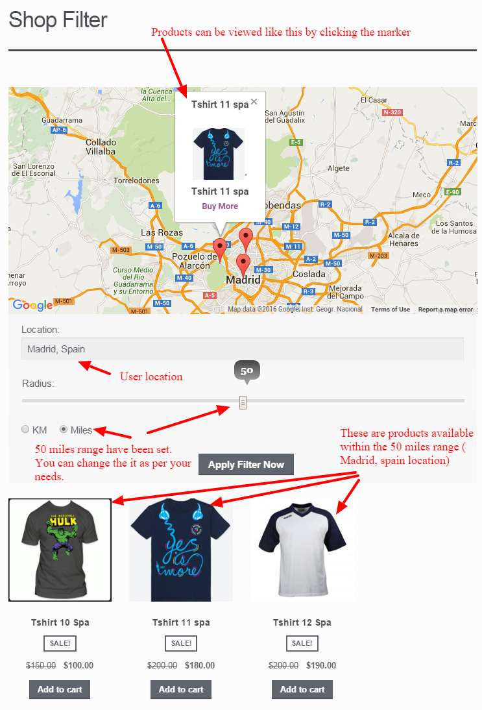
2.4 shortcodes & its functions in plugin - top
For product listing with goggle map feature #1
-
[make_filter_html map="yes" product_listing="yes" category="yes"]
# make_filter_html - It calls upon our plugin product & goggle map function into the Wordpress page to apply the functionality.
# map - It activates the Google maps with the products locations plotted in it. (i.e. [make_filter_html map=”yes”]).
# product_listing - It activates the product list available according to the user’s geolocation.
(i.e.[ make_filter_html map=”yes” product_listing =”yes”]).
# category - It activates the product list with category drop-down filter. so user's can search product category wise.
(i.e.[ make_filter_html map=”yes” product_listing =”yes” category="yes"]).
Image below, explains how to add the product list & goggle map shortcode to wordpress page created,
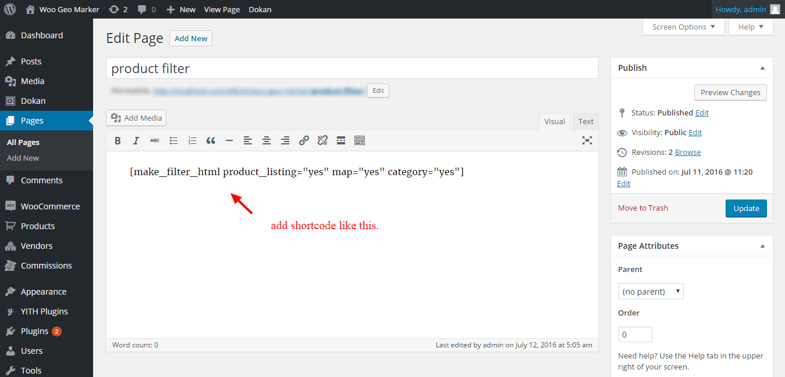
Image below, how to shortcode works,
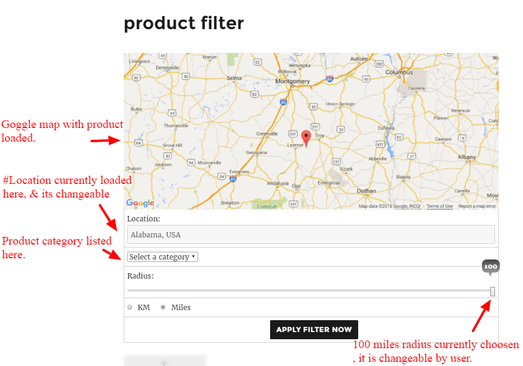
For vendor listing with goggle map feature #2
-
[vendor-stores-map map="yes"]
# vendor-stores-map - It calls upon our plugin vendor & goggle map function into the Wordpress page to apply the functionality.
# map - It activates the Google maps with the vendors locations plotted in it. (i.e. [vendor-stores-map map=”yes”]).
Image below, explains how to add the product list & goggle map shortcode to wordpress page created,
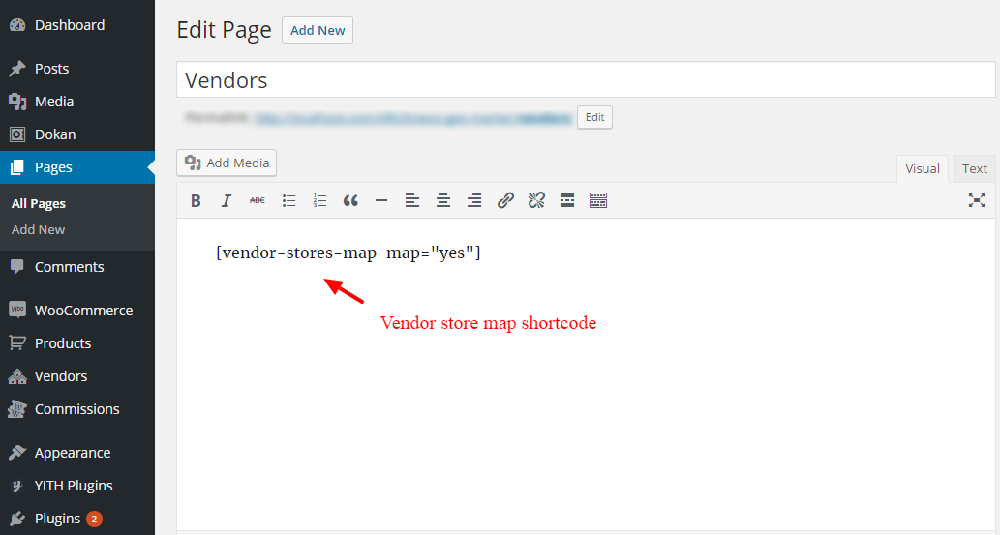
Image below, how to shortcode works,
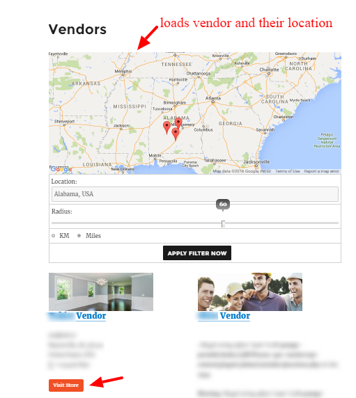
2.5 Plugin Admin settings - top
Admin likes to provide predefined location for product search can use this menus to manage the default location for the goggle maps and locate the products coming under that geolocation. So that users can view the products within that location radius by varying the range meter under the map.
Note: Few browsers does not support the user geolocation (e.g.IE version below 9, chrome below 4.0, Firefox below 3.5)
Our plugin consist of two woo-geo-marker-settings & vendor admin settings
-
woo-geo-marker-settings
Menu options:
- Default Product Filter Range
- Default Distance Option
- Category Page Filter ( Enable / Disable)
- Set City
- Settings for Map Icon
-
Default Product Filter range:
Admin can set the default range for the goggle map. So that product within that particular range will be displayed in the map as well as in Product listing.
-
Default Distance Option:
Admin can set the distance option as km or miles, So that the product within that distance option will be shown in map and product listing.
-
Category Page Filter (Enable / Disable)
Admin can add woo geo goggle map widget to sidebar ,after enabling the widget admin can flip the goggle map between page header area or sidebar , goggle map will be loaded in that area.
-
Set City:
Admin can set the default city to be shown in goggle map. Admin can just add the city, so that latitude, longitude, postal code is automatically located in the map. In that case we can see the products located within that city range.
E.g. If admin set default city as Madrid, Spain. The map will show Madrid Spain map location and products within that location.
-
Settings for Map Icon:
Admin can create custom markers separately for each product categories in admin, So that while user's searching for products can view the particular product with its icon in goggle map, replacing default goggle map marker. which will help user easily to recognize the product category. admin can manage the map custom marker here.
-
vendor-admin-settings
Menu options:
- Default Product Filter Range
- Default Distance Option
- Set City
- Show Vendor Address in Map
- Show Vendor Email in Map
- Show Vendor Contact No in Map
-
Default Product Filter range:
Admin can set the default range for the goggle map. So that product within that particular range will be displayed in the map as well as in Product listing.
-
Default Distance Option:
Admin can set the distance option as km or miles, So that the product within that distance option will be shown in map and product listing.
-
Set City:
Admin can set the default city to be shown in goggle map. Admin can just add the city, so that latitude, longitude, postal code is automatically located in the map. In that case we can see the products located within that city range.
E.g. If admin set default city as Madrid, Spain. The map will show Madrid Spain map location and products within that location.
-
Show Vendor(Address, Email, Contact):
Admin can enable these options , so that these option will be loaded in goggle marker info-view window option, so that user can knew about vendor information.
Image below shows the options in woo-geo-marker admin settings,
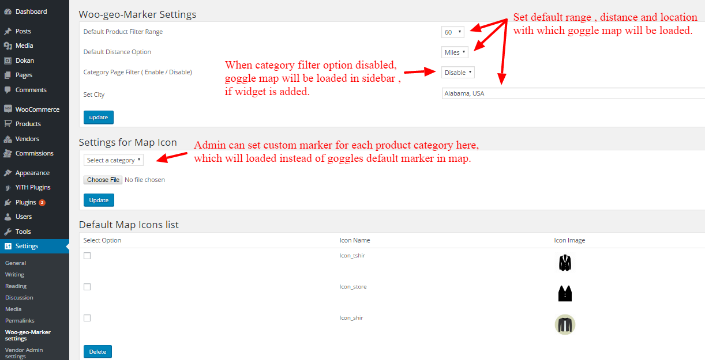
Image below shows the options in vendor-admin-settings,
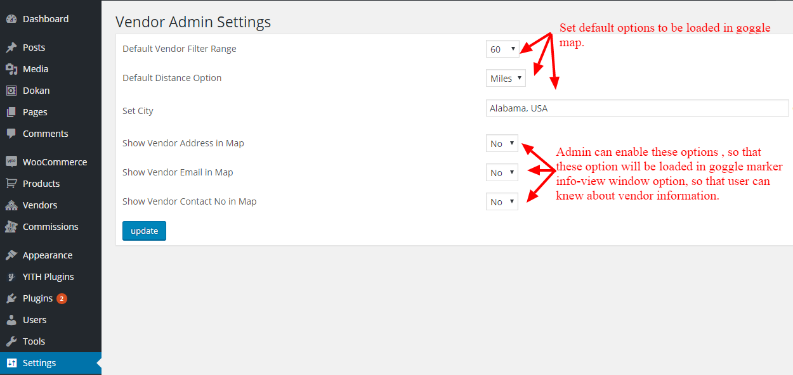
2.6 Add location to a product - top
Add location to products available before proceeding to goggle map. To get better results update products location as mentioned in the image below.
To add location to a product, Go to admin side menu > product > Add product
Location add form field will be available in product Data tab.
Image below, shows how to add location to product.
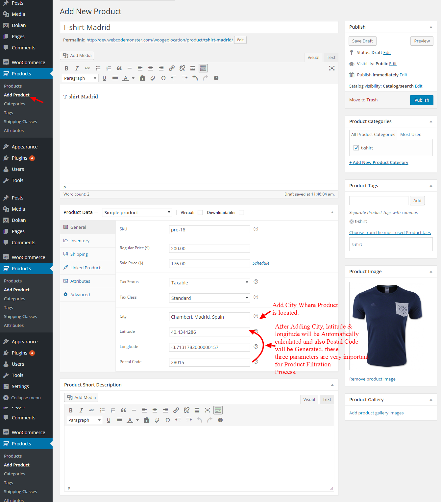
2.7 How to Add Woogeo: Goggle map Widget- top
Before Proceeding to the Product category Filtration process, Check Whether the Widget is added in sidebar in admin. If Widget is not added the Map and category Filter for widget Will not be loaded in sidebar.
Note: If Geolocation is not shared by user, our plugin will automatically get the Default City from Woogeolocation admin settings. According to the location available the Products will be filtered. If Change of Location needed user can directly type in location textbox below the Google Map.
Image below, explains about the "Note" mentioned in,
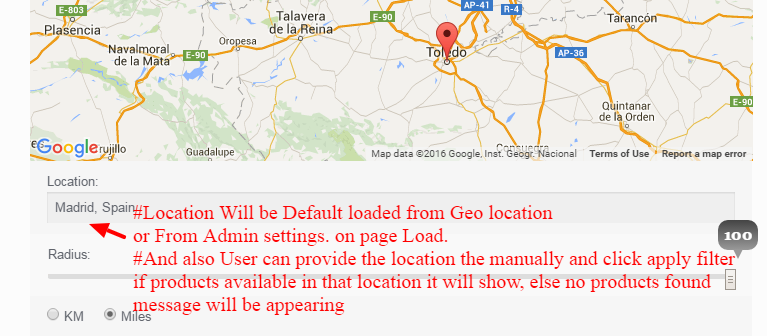
- Add Woogeo: Goggle map Widget
- Go to admin menu > Appearance > Widgets > Select: Woogeo: Google Map Widget> Drag & Place it in Sidebar Area.
-
Below image ,shows how add widget,
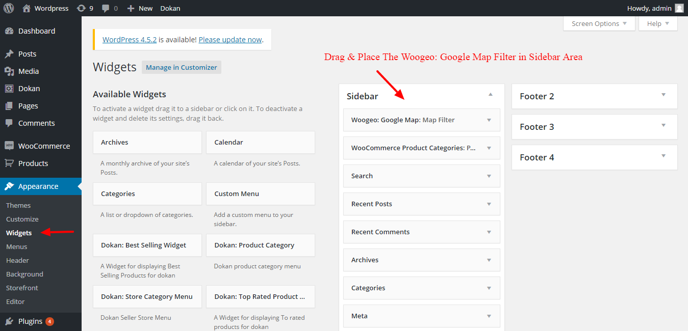
-
Below image ,shows the widget output,
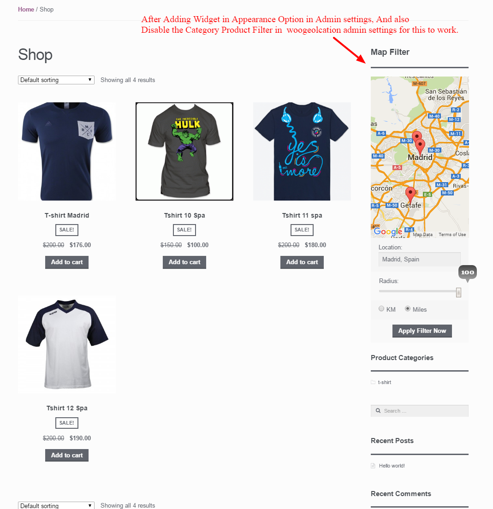
Once again, thank you so much for purchasing this plugin. As I said at the beginning, I'd be glad to help you if you have any questions relating to this plugin. No guarantees, but I'll do my best to assist. If Any Queries contact Support mail us at: info@sharesoft.in
Sharesoft
Go To Table of Contents